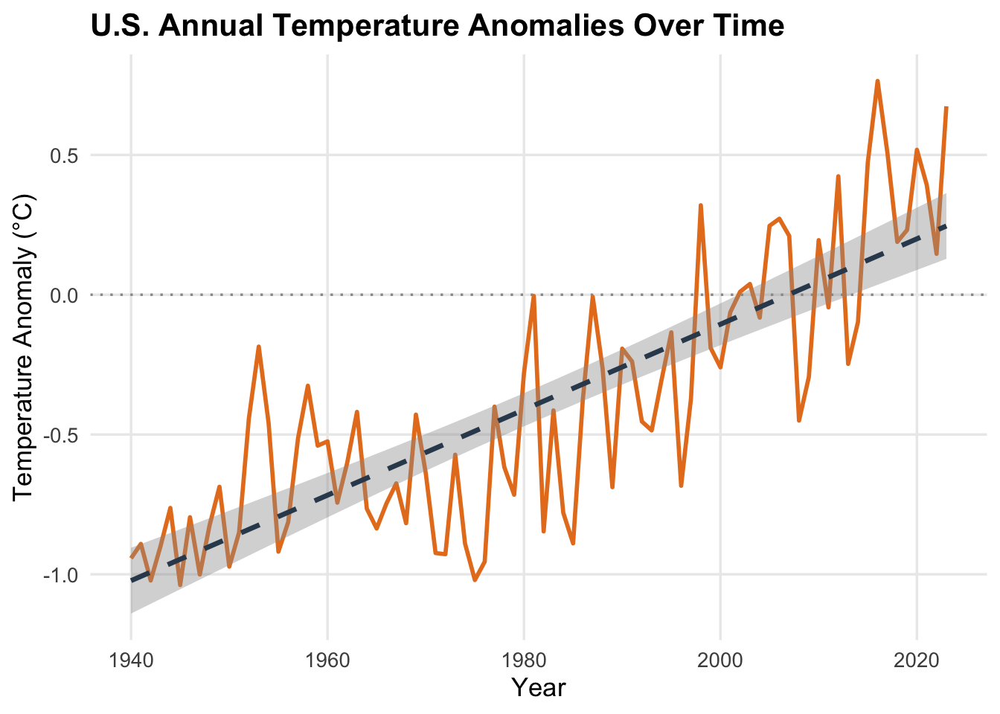
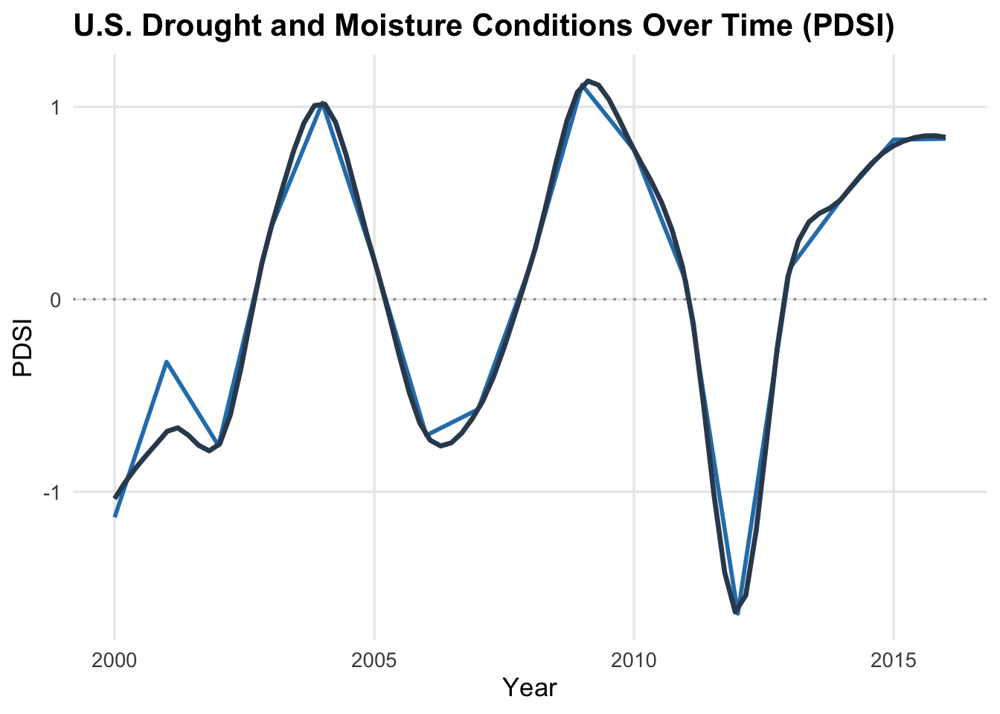
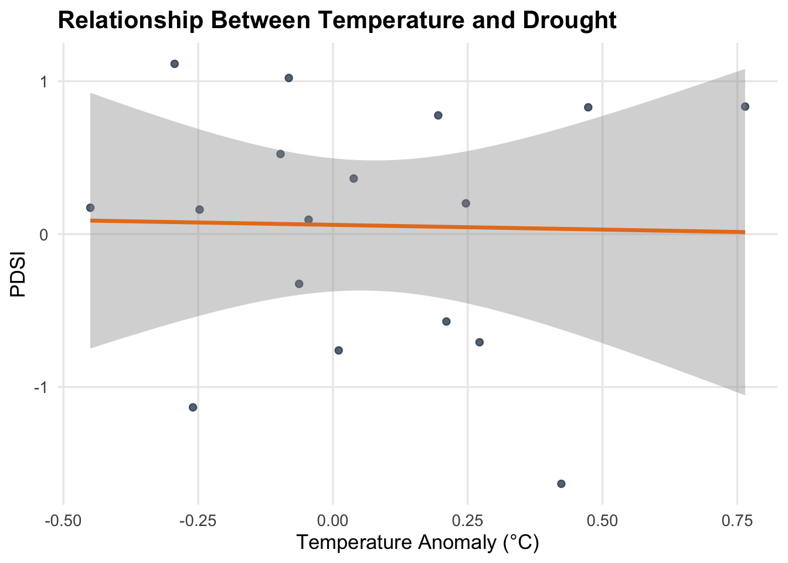
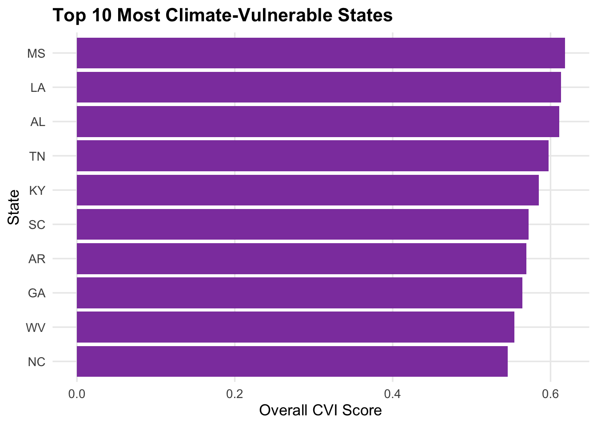

Overview of U.S. Climate Trends
This page presents the core climate evidence behind the
entire project.
It is written so that someone with no statistics
background can still follow what each graph is saying.
We look at three core climate pieces:
-
Temperature anomalies over time (how much warmer or
cooler than a baseline year).
-
Drought patterns using the Palmer Drought Severity
Index (PDSI).
-
Climate vulnerability by state using a Climate
Vulnerability Index (CVI).
For each section, you will see:
-
a graph,
-
a short “What you’re seeing” explanation,
-
and a small summary table with key numbers.
Data Used on This Page
The analyses on this page draw from three cleaned datasets:
-
climate_year_temp.csv – annual temperature
anomalies (°C) with columns like year and
temp_anomaly.
-
climate_year_pdsi.csv – annual drought
conditions using the Palmer Drought Severity Index, with
columns like year and pdsi.
-
climate_state_cvi.csv – state-level climate
vulnerability, including State, Overall CVI
Score, and related indicators.
All of the graphs and tables below are built from these datasets.
1. Temperature Trends Over Time
1.1 National Temperature Anomaly (Line Chart)

What you’re seeing
-
Each point on the orange line is a single year.
-
The y-axis shows how much warmer or cooler that year was compared to a
baseline:
-
Above 0 = warmer-than-normal year
-
Below 0 = cooler-than-normal year
-
The dashed dark line is the trend line summarizing the
overall direction of change.
If this trend line slopes upward, it means that on average, the U.S. is
getting warmer over time.
1.2 Key Temperature Numbers
How to read this table
-
first_year / last_year – the time span covered by the
data.
-
mean_anomaly – the average temperature change relative
to the baseline.
-
min_anomaly / max_anomaly – the coolest and warmest
years compared to the baseline.
Together, this confirms that the dataset covers a long enough time
window to see a clear warming signal.
1.3 Temperature Trend per Year
What this model is saying
-
This is a simple line that best fits the data:
temp_anomaly = a +
b * year.
-
The estimate for
year (the slope
b) tells you how much the anomaly changes per year.
-
If that value is positive, it means each year is, on average, a little
warmer than the one before.
You don’t need to focus on the exact numbers to get the message: this is
another way of confirming there is a measurable warming
trend across the study period.
1.4 Warmest Years in the Record
What you’re seeing
This table lists the 10 warmest years relative to the
baseline.
If most of these years are clustered toward the end of the record, it
visually reinforces the idea that recent years are unusually
warm.
2. Drought Patterns (PDSI)
The Palmer Drought Severity Index (PDSI) tracks dryness and wetness:
-
Negative PDSI = drier than normal (possible drought).
-
Positive PDSI = wetter than normal.
2.1 Drought Over Time

What you’re seeing
-
Each point on the blue line is a single year.
-
Below 0 = drier-than-normal years; above
0 = wetter-than-normal years.
-
The smooth dark line shows longer-term swings between dry and wet
periods.
This highlights that U.S. climate doesn’t sit at “average.” It swings
through periods of drought and periods of
wetter conditions.
How to read this table
-
mean_pdsi – the average moisture level across all
years.
-
min_pdsi / max_pdsi – the driest and wettest years in
the record.
Even if the average is near zero, the extremes (very dry or very wet
years) can have major impacts on ecosystems and health.
2.3 Optional: Long-Term Drought Trend
What this model is checking
This model asks a simple question:
On average, are years slowly trending drier, wetter, or staying
about the same?
The main story, though, is usually not a smooth trend, but the
swings and extremes seen in the plot above.
3. Temperature and Drought Together
3.1 Scatterplot: Temperature Anomaly vs PDSI

How to read this scatterplot
-
Each dot is one year in the dataset.
-
The x-axis shows how warm that year was compared to normal
(
Temperature Anomaly).
-
The y-axis shows how dry or wet that same year was (
PDSI).
-
The smooth orange line summarizes the overall pattern:
-
If the line slopes down, warmer years tend to be
drier.
-
If the line slopes up, warmer years tend to be
wetter.
-
If the line is fairly flat, there is no strong
relationship either way.
This plot does not prove that temperature “causes”
drought or vice versa.
Instead, it answers a simpler question:
“When the U.S. has unusually warm years, do those same years
also tend to be unusually dry or unusually wet?”
3.2 Correlation Between Temperature and PDSI
What this table means
-
correlation – how strongly temperature and PDSI move
together:
-
Close to 0: no strong relationship.
-
Negative: warmer years tend to be drier.
-
Positive: warmer years tend to be wetter.
-
p_value – whether that pattern is likely to be real or
just random noise.
In context, this helps you describe whether warm years and drought years
tend to line up, which sets the stage for thinking about climate
and disease risk together.
4. Climate Vulnerability by State (CVI)
Climate does not affect all places equally.
The Climate Vulnerability Index (CVI) summarizes how exposed and
sensitive each U.S. state is to climate-related risks.
4.1 Overall Vulnerability Range
## Min. 1st Qu. Median Mean 3rd Qu. Max.
## 0.3377 0.4552 0.4806 0.4898 0.5363 0.6182
What you’re seeing
This summary shows the minimum,
maximum, and typical (median) CVI
scores across states.
It gives a quick sense of how wide the gap is between the least and most
vulnerable states.
4.2 Top 10 Most Vulnerable States

How to read this table and chart
-
The table lists the 10 highest CVI scores.
-
In the bar chart, each bar is a state, and higher bars mean higher
climate vulnerability.
-
States at the top of the chart are those that may face the
greatest climate-related risks.
These are the places where shifts in temperature and drought could have
especially strong impacts on health, infrastructure, and ecosystems.
5. Why These Climate Trends Matter for Disease
Across all of these graphs and tables, a few big messages stand out:
-
The U.S. is experiencing a long-term warming trend.
-
The climate shows strong swings between dry and wet
years.
-
Some states are much more climate-vulnerable than
others.
These patterns matter for vector-borne diseases because:
-
Warmer conditions can speed up mosquito and tick life
cycles and pathogen replication.
-
Drought and moisture extremes can reshape breeding
sites, standing water, and host movement.
-
Highly vulnerable states may see greater health impacts
from the same climate shifts.
This page is designed so that, even without a statistics background,
readers can see the climate story:
the U.S. is
warming, conditions are variable, and
some places are more at risk.
That is the foundation for the Disease Trends,
Climate–Disease Comparison, and Utah
Focus pages.
Climate Trends – GEOG 3000, Utah Valley University